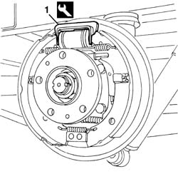
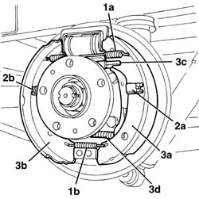
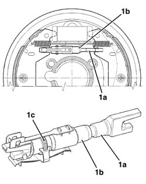

3320B60 REAR BRAKE SHOES - R.R.
- Path
- Procedures > 33 BRAKING SYSTEM > 3320 DRUM BRAKES > 3320B REAR DRUM BRAKES > 3320B60 REAR BRAKE SHOES - R.R.
- Kind
- repair procedure (removal / refitting; the operation number is the code)
- Applies to
- all engines; all production periods
- Interactive page
- https://sloeber94.github.io/elrnDB-fDct/en/#/244001093
Applies to: all engines; all production periods
 Removing
Removing
 Refitting
RefittingOp. 3320B30 LH OR RH REAR BRAKE DRUM (ONE) R R
1. Position the special tool on the shoe control cylinder.
Description | Code | Function | |
|---|---|---|---|
1 | Retainer | 1.872.257.000 | - |

Applies to: all engines; all production periods
1. Release the shoe return springs (1a) and (1b) on one side.
2. Release the shoe retaining springs (2a), then remove the pins (2b) from behind.
3. Remove the shoes (3a) and (3b); keep the shoe wear recovery device (3c) and, if necessary, release it from the handbrake cable (3d).

Applies to: all engines; all production periods
Refitting
Removing- Place the shoes in position with the wear recovery device and connect the handbrake cable.
- Refit the shoe retaining springs and pins in position.
- Attach the shoe return springs.
1. If new brake shoes are being fitted, the adjustment screw (1a) and the rod (1b) for the shoe wear recovery device must be placed in contact with the shoe (device fully tightened), then undo the toothed ring nut (1c) by half a turn.

Applies to: all engines; all production periods
- Remove the tool from the shoe control cylinder.
Op. 3320B30 LH OR RH REAR BRAKE DRUM (ONE) R R
- Check that the brakes are working.